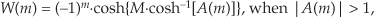

I Computing Chebyshev Window Sequences
Because detailed methods for computing Chebyshev window functions are not readily available in the literature of DSP, here we provide the steps for computing these useful window sequences.
Below we provide methods for computing two types of Chebyshev window sequences. The first window type yields symmetric window sequences, in which their first and last samples are equal. That type of window is used in the Window Design Method of tapped-delay line FIR filter design.
The second Chebyshev window computation method produces nonsymmetric window sequences, in which their first and last samples are not equal. That type of window is used for spectral leakage reduction in spectrum analysis applications. (This nonsymmetric type of window has a Fourier transform that is real-only.) I thank DSP guru Prof. Fredric J. Harris, San Diego State University, for his personal guidance enabling the creation of the following procedures.
I.1 Chebyshev Windows for FIR Filter Design
Symmetric Chebyshev window sequences, used in the Window Design Method of tapped-delay line FIR filters, are computed as follows:
1. Given a desired Chebyshev window sequence length of N, where N is an odd integer, define integer M = N–1.
2. Define the window’s sidelobe-level control parameter as γ. The window’s sidelobe peak levels will be –20γ dB below the main lobe’s peak level. (For example, if we desire frequency-domain sidelobe levels to be 40 dB below the main lobe’s peak level, then we set γ = 2.)
4. Compute the M-length sequence A(m) using
where the index m is 0 ≤ m ≤ (M–1).
5. For each m, evaluate the Mth-degree Chebyshev polynomial whose argument is A(m) to generate a frequency-domain sequence W(m). There are many ways to evaluate Chebyshev polynomials. Due to its simplicity of notation, we suggest the following:

or

depending on whether or not an individual |A(m)| value is greater than unity. In theory the resultant W(m) sequence is real-only, but our software’s computational numerical errors may produce a complex-valued W(m) with very small imaginary parts. Those imaginary parts, if they exist, should be ignored. The above (−1)m factors are necessary because the frequency-domain index m is never less than zero. Note: If your software does not accommodate complex values, then you can avoid problems by replacing A(m) with |A(m)| in this step.
6. Compute a preliminary time-domain window sequence, w(m), using
w(m) = real part of the M-point inverse DFT of W(m).
7. Replace w(0), the first w(m) time sample, with w(0)/2.
8. Append that new w(0) sample value to the end of the M-point w(m) sequence, w(N–1) = w(0), creating the desired N-length w(k) window sequence where the time index k is 0 ≤ k ≤ (N–1).
9. Normalize the amplitude of w(k), to obtain a unity peak amplitude, by dividing each sample of w(k) from Step 8 by the maximum sample value in w(k).
The above procedure seems a bit involved but it’s not really so bad, as the following Chebyshev window design example will show. Assume we need an N = 9-sample Chebyshev window function whose frequency-domain sidelobes are 60 dB below the window’s main lobe level. Given those requirements, N = 9, M = 8, γ = 3, and from Eq. (I-1)
α = cosh[cosh–1(103)/8] = 1.4863.
After the inverse DFT operation in the above Step 6, w(m = 0)/2 = 11.91, thus we set w(k = 0) = w(k = 8) = 11.91. The maximum value of w(k) is 229.6323, so we divide the entire w(k) sequence by that value, yielding our final normalized 9-sample symmetric Chebyshev window sequence listed in the rightmost column of Table I-1.
Table I-1 Nine-Point Symmetric Chebyshev Window Computations
I.2 Chebyshev Windows for Spectrum Analysis
Nonsymmetric Chebyshev window sequences, used for spectral leakage reduction in spectrum analysis applications, are computed using the above steps with the following changes:
• For a Q-length nonsymmetric Chebyshev window sequence, where Q is an even integer, in the above Step 1 set M = Q.
• Skip the above Step 8, retaining the Q-length nonsymmetric w(k) sequence, where the time index k is 0 ≤ k ≤ (Q–1). Normalize the amplitude of the w(k) sequence as described in the above Step 9.
If Q = 8, for example, our final γ = 3 normalized 8-sample nonsymmetric Chebyshev window sequence would be the samples listed in the rightmost column of Table I-2.
Table I-2 Eight-Point Nonsymmetric Chebyshev Window Computations